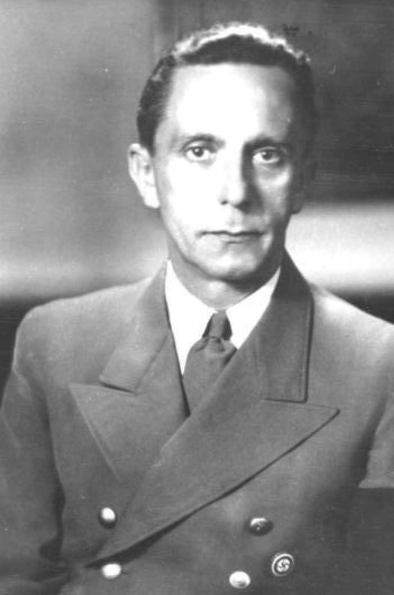

Nom : Paul Joseph Goebbels
Dates : 29 octobre 1897 – 1er mai 1945
Nationalité : Allemande
Joseph Goebbels est l’un des principaux dirigeants du régime nazi. Ministre de la Propagande, il orchestre la manipulation de masse, le contrôle des médias, la censure et la diffusion de l’idéologie du Reich. Son influence sur la population allemande fut considérable.
Goebbels supervise la propagande interne et externe du Reich. Il contrôle la presse, la radio, le cinéma, les affiches et les discours officiels. Il organise les campagnes antisémites, les mises en scène politiques, et les grands rassemblements destinés à galvaniser la population. En 1943, il prononce le célèbre discours du « Sportpalast » appelant à la « guerre totale ».
Goebbels est considéré comme l’un des principaux artisans de la machine de propagande nazie. Son action a contribué à maintenir l’adhésion d’une partie de la population au régime, à masquer les crimes du Reich et à prolonger la guerre. Son rôle dans la diffusion de la haine et de la désinformation est central dans l’histoire du XXe siècle.